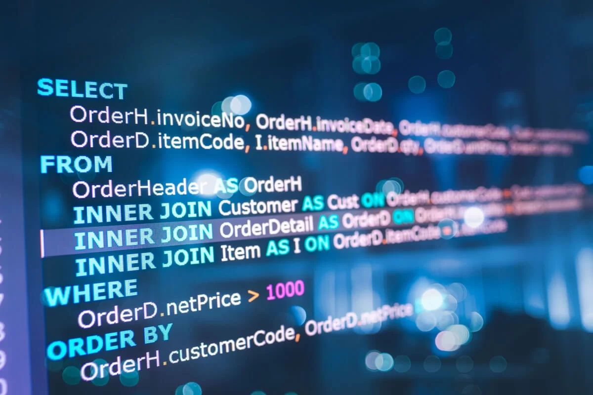
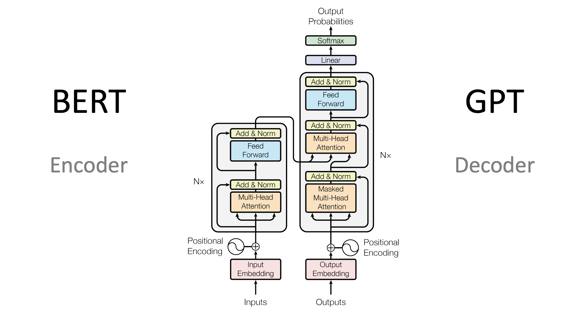

About
A passionate and dedicated software professional with over 4 years of experience in Software Engineering, Data Analytics, and Machine Learning. Currently pursuing my Master’s in Data Science at Pace University (graduating May 2026), I specialize in transforming data into actionable insights and building intelligent systems that drive innovation.
AI/ML Engineer | Data Scientist
I design and implement agentic AI systems and modern GenAI architectures, build secure data-driven pipelines, and develop Machine Learning & Deep Learning models that solve real business problems. My work focuses on robust model performance, scalable system design, and keeping data privacy & security at the core of every solution.
- Experience: 4+ years
- Location: New York, NY
- Degree: Master’s in Data Science
- Email: subiksha16@gmail.com
I’m always eager to collaborate on projects that blend AI, analytics, and performance optimization — driving excellence, innovation, and customer-centric solutions.
Skills
I always strive about attention to details, collabrate with cross functional teams, build documentation
Programming
ML & AI
Softwares and Tools
Professional Narrative
Merging Performance Engineering, Machine Learning, and AI to Power Data-Driven Innovation
Academic Foundation
Master of Science in Data Science
Expected May 2026
Pace University, New York, NY
GPA: 3.75
Key Focus: Deep Learning, Mathematical Foundations of Analytics, Scalable Databases, Data Mining, Algorithms for Data Science.
Bachelor of Technology in Information Technology
2016 - 2020
RMK Engineering College, Chennai, India
Professional Experience
Cognizant
Sep 2020 – Aug 2024Chennai, India | New York, NY (Remote/Hybrid)
Data Scientist
- Led the strategy and implementation of RAG-based internal knowledge systems using Python and LangChain, reducing analyst research time by 40%.
- Developed advanced segmentation models (K-Means/Clustering) on 5M+ records, identifying high-value behavioral patterns and improving marketing conversion by 22%.
- Engineered complex ETL pipelines to ingest and clean high-volume beverage transaction data for downstream predictive modeling.
- Applied Bayesian inference, regression, and time-series forecasting (Prophet/LSTM) to optimize inventory and evaluate promotional ROI via A/B testing.
- Built automated Power BI dashboards to translate complex model KPIs and risk metrics into actionable business narratives.
Data Scientist
- Architected end-to-end ETL pipelines and ML feature workflows on Azure Databricks and GCP using PySpark.
- Built propensity models and churn prediction systems using LightGBM, achieving 84% recall to support global marketing strategies.
- Fine-tuned BERT-based models for sentiment analysis on customer reviews, providing merchandising teams with data-driven feedback loops.
- Managed large-scale data lakes and Snowflake environments, ensuring 99% data integrity and high-performance retrieval.
- Implemented CI/CD pipelines via Azure DevOps for automated model versioning, testing, and deployment.
Junior Data Scientist
- Developed demand forecasting models that improved sales forecast accuracy by 20% over legacy rule-based systems.
- Built LSTM-autoencoders and Isolation Forest models for IoT sensor data, reducing undetected equipment faults by 27%.
- Designed and executed A/B experiments and hypothesis testing to validate distribution routing strategies, achieving a 15% efficiency gain.
- Delivered end-to-end reporting solutions in Tableau and Power BI to provide visibility into supply chain and risk metrics.
Summer Intern
- Performed performance testing for web & API applications using LoadRunner, JMeter, and NeoLoad.
- Automated sprint-wise regression and performance checks during Tableau dashboard migration initiatives.
- Monitored application health using Azure Monitoring & Dynatrace, enabling early detection and resolution of issues.
Work Samples
Showcasing end-to-end expertise in Machine Learning, Data Engineering, and Generative AI architectures.

Nexus Audio: E-commerce & A/B Testing
Production-grade e-commerce platform featuring integrated product analytics and A/B testing.
- Testing: Designed conversion funnels to track user drop-off points.
- Engineering: Full-stack integration with secure payment gateways.

Content-Based Spotify Recommender
Personalized recommendation engine analyzing 114k+ tracks using audio features and unsupervised learning.
- Scale: Clustered high-dimensional data using PCA for dimensionality reduction.
- Logic: Implemented Cosine Similarity for real-time track suggestions.
Multimodal RAG Workflow
Built a RAG pipeline capable of processing and retrieving information from both text and image-based data.
- Retrieval: Optimized semantic search using FAISS vector indexing.
- Context: Integrated multi-modal embeddings for complex document queries.

Fine-Tuning LLMs for SQL
Fine-tuned an open-source LLM to convert complex natural language questions into executable SQL queries.
- Optimization: Used QLoRA for memory-efficient training on consumer GPUs.
- Accuracy: Significant improvement in Join-query generation vs. base model.

Transformer from Scratch
Native implementation of the "Attention Is All You Need" architecture for lyric generation.
- Modeling: Multi-head attention, positional encoding, and layer norms.
- Performance: Scaled to generate coherent sequences based on training data.